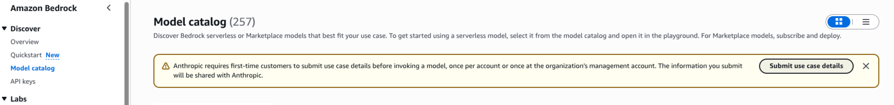
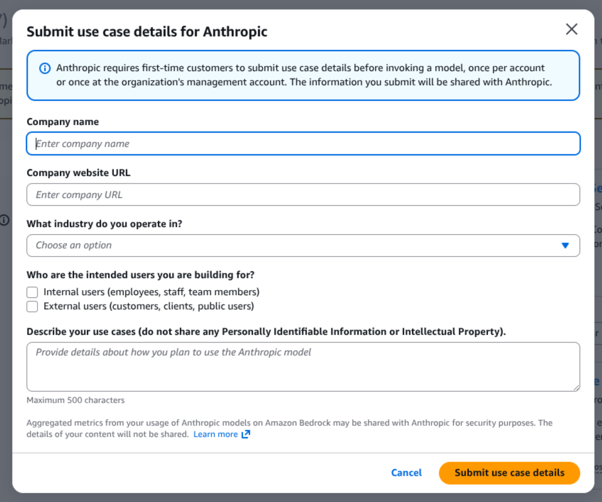
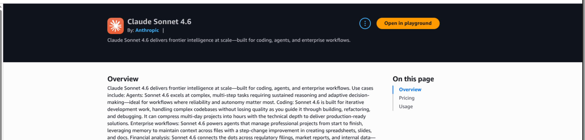

AI Assistant & MCP Server
SUSE® Observability provides two related AI capabilities that you enable through Helm values. Both are disabled by default in self-hosted installations:
-
MCP server — a Model Context Protocol endpoint that external code assistants (such as Claude Code) connect to. The external tool brings its own model, so you do not need to configure an LLM provider in SUSE® Observability. Controlled by
ai.mcp.enabled. -
AI Assistant — the in-product assistant UI and its backend, which run autonomous investigations using an LLM provider you configure (AWS Bedrock or Anthropic). Controlled by
ai.assistant.enabled. Enabling the AI Assistant also enables the MCP server, because the assistant is an MCP client.
Choose what to enable:
-
To connect external code assistants only, enable just the MCP server. See Enable the MCP server.
-
To use the in-product AI Assistant, enable the AI Assistant. See Enable the AI Assistant. This also brings up the MCP server, so you do not need to enable both.
Enable the MCP server
The MCP server lets external MCP-compatible AI tools (such as Claude Code) use SUSE® Observability read-only tools for topology, health, logs, traces, and metrics. It can run on its own, without the AI Assistant UI, the AI Assistant backend, or an LLM provider — the external tool brings its own model.
Set the MCP feature flag in your Helm values:
ai:
mcp:
enabled: trueAfter enabling the flag, the chart deploys the suse-observability-mcp Deployment and the related Service and ServiceAccount, and exposes the MCP server at the /mcp path of your SUSE® Observability base URL. It does not deploy the AI Assistant and does not enable the AI Assistant feature in the UI.
For details on connecting an external tool to the MCP server, see Connect external AI tools to the MCP server.
Enable the AI Assistant
When you enable the AI Assistant, the Helm chart turns on the AI Assistant feature in the UI and deploys:
-
the AI Assistant UI, which is already deployed but hidden behind the feature flag
-
the AI Assistant backend service
-
the MCP (Model Context Protocol) server used by the AI Assistant backend
|
Using AI Assistant generates costs because it invokes external AI models. Larger investigations can take several minutes and may generate significant costs. |
Set the feature flag in your Helm values:
ai:
assistant:
enabled: trueAfter enabling the flag, the chart exposes the AI Assistant UI and deploys the suse-observability-ai-assistant StatefulSet, the suse-observability-mcp Deployment, and the related Services and ServiceAccounts. You must also configure an LLM provider — see Configure AI model provider.
Most predefined roles already have access to AI Assistant. To grant users with custom roles access, follow the steps in Access AI Assistant.
Configure AI model provider
Set ai.assistant.provider in your Helm values to choose which model provider AI Assistant uses. The default value is bedrock.
ai:
assistant:
enabled: true
provider: bedrockTo use Anthropic directly instead of AWS Bedrock, change the provider value to anthropic and add the Anthropic api token configuration described in the Anthropic tab below.
-
AWS Bedrock
-
Anthropic
AWS Bedrock is the default model provider for AI Assistant.
Enable Anthropic models in AWS Bedrock
|
Before the first use of AI Assistant, make sure Anthropic Claude models are enabled in AWS Bedrock for the AWS account and region used by the AI Assistant backend. If model access is not enabled, AI Assistant will not be able to invoke the required Bedrock models even if the IAM role and ServiceAccount are configured correctly. Use the same AWS region that you configure for AI Assistant. If |
-
Open the AWS Bedrock console in the correct account and region.
-
Open the
Model catalog. If Anthropic models are not enabled yet, AWS shows a prompt to enable access.
-
Start the access request flow for Anthropic Claude models and enable them for your account.

-
After access is granted, verify that Anthropic Claude models are available in Bedrock.

|
It is recommended to open the Bedrock playground for |
|
The exact AWS console screens can differ slightly between regions and AWS accounts, but the required outcome is the same: Anthropic Claude models must be enabled in Bedrock before AI Assistant is used. After model access is enabled in AWS Bedrock, it can take a few minutes before the models become usable in AI Assistant. |
Create the IAM policy and role
IAM policy permissions
Grant the AI Assistant role permission to invoke the Bedrock models used by the service. The current AI Assistant defaults use Anthropic Claude models through Bedrock, so the minimum required actions are:
-
bedrock:InvokeModel -
bedrock:InvokeModelWithResponseStream
|
Even though the current implementation uses Claude models, we recommend allowing these actions on all Bedrock models with |
Recommended policy:
{
"Version": "2012-10-17",
"Statement": [
{
"Sid": "AllowAiAssistantBedrockInference",
"Effect": "Allow",
"Action": [
"bedrock:InvokeModel",
"bedrock:InvokeModelWithResponseStream"
],
"Resource": ["*"]
}
]
}If you prefer a more restrictive policy, you can scope access to specific model ARNs, but you must review that policy on every upgrade.
IAM role trust policy
Create an IAM role that trusts the Kubernetes ServiceAccount used by the AI Assistant backend:
{
"Version": "2012-10-17",
"Statement": [
{
"Effect": "Allow",
"Principal": {
"Federated": "arn:aws:iam::123456789012:oidc-provider/oidc.eks.eu-west-1.amazonaws.com/id/EXAMPLE"
},
"Action": "sts:AssumeRoleWithWebIdentity",
"Condition": {
"StringEquals": {
"oidc.eks.eu-west-1.amazonaws.com/id/EXAMPLE:aud": "sts.amazonaws.com",
"oidc.eks.eu-west-1.amazonaws.com/id/EXAMPLE:sub": "system:serviceaccount:suse-observability:suse-observability-ai-assistant"
}
}
}
]
}Replace the AWS account ID, OIDC provider, AWS region, and Kubernetes namespace with your own values.
Configure the ServiceAccount for AWS Bedrock
Only the AI Assistant backend needs AWS credentials for Bedrock. The MCP server does not call Bedrock.
On Amazon EKS, the recommended approach is IAM Roles for Service Accounts (IRSA). Add the IAM role annotation to the AI Assistant ServiceAccount:
ai:
assistant:
enabled: true
provider: bedrock
bedrock:
awsRegion: eu-west-1
stackstate:
components:
aiAssistant:
serviceAccount:
annotations:
eks.amazonaws.com/role-arn: arn:aws:iam::123456789012:role/suse-observability-ai-assistantThis annotation is applied to the suse-observability-ai-assistant ServiceAccount created by the chart.
AI Assistant can also call Anthropic directly by setting ai.assistant.provider=anthropic.
Configure Anthropic with a Helm value
Set the provider to anthropic and provide the api key in your Helm values:
ai:
assistant:
enabled: true
provider: anthropic
anthropic:
apiKey: <your-anthropic-api-key>If you set ai.assistant.anthropic.apiKey, the chart uses that api key for the AI Assistant backend.
Configure Anthropic with an existing Secret
If you already manage the Anthropic api key in an existing Kubernetes Secret, reference that Secret instead of storing the key directly in the Helm values:
ai:
assistant:
enabled: true
provider: anthropic
anthropic:
fromExternalSecret:
name: anthropic-api-key
key: ANTHROPIC_API_KEYIf you omit ai.assistant.anthropic.fromExternalSecret.key, the chart uses ANTHROPIC_API_KEY by default.
|
When |
|
Only the AI Assistant backend needs the Anthropic api key. The MCP server does not call Anthropic. |
Access AI Assistant
Most predefined roles already include the execute-ai permission required to use AI Assistant. In the current Helm chart permission definitions, stackstate-admin, stackstate-power-user, stackstate-k8s-troubleshooter, and stackstate-k8s-admin can use AI Assistant by default.
To grant AI Assistant access to users with custom roles, add the execute-ai system permission to their role.
Grant it with the sts CLI:
sts rbac grant --subject ai-users --permission execute-aiVerify it with:
sts rbac describe-permissions --subject ai-usersIf you manage access through Rancher RBAC, the permission maps to resource ai with verb execute in the instance.observability.cattle.io API group.
Configure MCP and AI Assistant
Most AI Assistant settings should stay at their chart defaults. In particular, it is recommended not to change internal connectivity settings, such as listen addresses, service ports, or the built-in environment variables unless you have explicit guidance for your deployment.
In practice, the most important settings are:
-
ai.assistant.providerto choosebedrockoranthropic -
ai.assistant.bedrock.awsRegionfor AWS Bedrock region selection -
ai.assistant.anthropic.apiKeyorai.assistant.anthropic.fromExternalSecret.*for Anthropic api key management -
stackstate.components.mcp.replicaCountto scale the MCP server -
stackstate.components.mcp.resourcesto size the MCP server -
stackstate.components.aiAssistant.resourcesto size the AI Assistant backend -
stackstate.components.aiAssistant.serviceAccount.annotationsto attach an AWS IAM role for Bedrock access
MCP configuration
The MCP server is enabled automatically together with AI Assistant, and can also be enabled on its own (see Enable the MCP server). The main settings to tune are:
-
stackstate.components.mcp.replicaCount- increase it when you need more MCP capacity -
stackstate.components.mcp.resources- to control CPU and memory allocation
AI Assistant backend configuration
For the AI Assistant backend, the most important settings are:
-
stackstate.components.aiAssistant.resources- to control CPU and memory allocation -
ai.assistant.provider- to choose whether the backend uses AWS Bedrock or Anthropic directly -
ai.assistant.bedrock.awsRegion- to set the AWS region when using AWS Bedrock -
stackstate.components.aiAssistant.serviceAccount.annotations- to attach the IAM role required for AWS Bedrock -
ai.assistant.anthropic.apiKeyorai.assistant.anthropic.fromExternalSecret.*- to provide the Anthropic api key when using Anthropic directly
The persistence settings (stackstate.components.aiAssistant.persistence.size and stackstate.components.aiAssistant.persistence.storageClass) can also be adjusted if you want a different PVC size or storage class for the SQLite database.
Example:
ai:
assistant:
enabled: true
provider: bedrock
bedrock:
awsRegion: eu-west-1
stackstate:
components:
mcp:
replicaCount: 2
resources:
requests:
cpu: "250m"
memory: "512Mi"
limits:
cpu: "1"
memory: "512Mi"
aiAssistant:
resources:
requests:
cpu: "500m"
memory: "1Gi"
limits:
cpu: "2"
memory: "1Gi"
serviceAccount:
annotations:
eks.amazonaws.com/role-arn: arn:aws:iam::123456789012:role/suse-observability-ai-assistant
persistence:
size: 5GiThis example focuses on the settings most often changed in production: model provider selection, MCP scaling, CPU and memory sizing, the IAM role annotation for AWS Bedrock, and optional AI Assistant persistence sizing.
Related information
For more details on related configuration patterns, see:
-
Override default configuration for adding Helm values and extra environment variables
-
Create a Custom Integration for an example custom integration workflow
-
Permissions for the complete RBAC permission reference
-
Roles for predefined and custom role configuration
-
Rancher RBAC for Rancher-managed roles and custom RoleTemplates